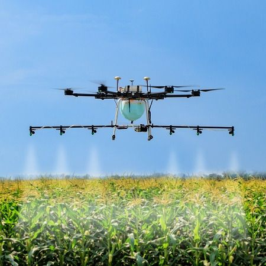
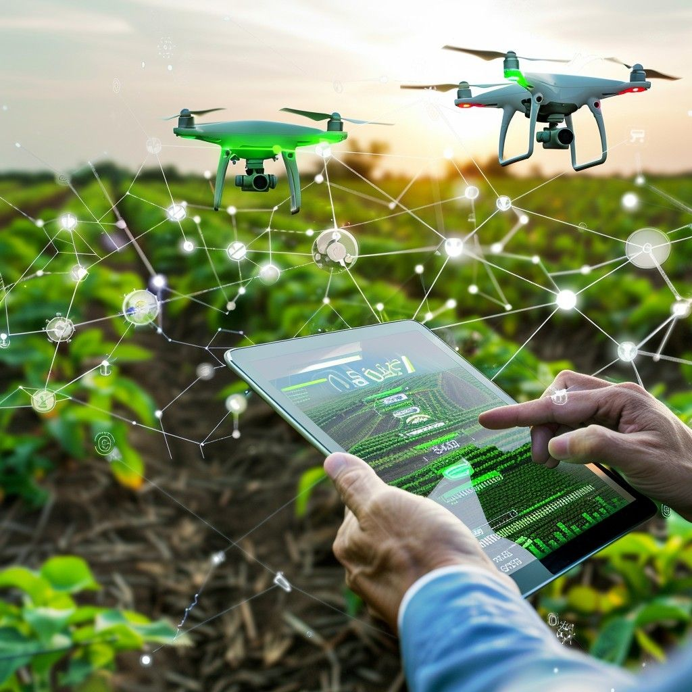
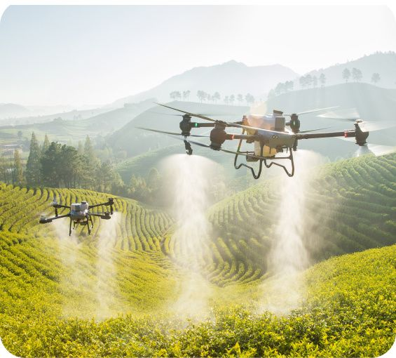
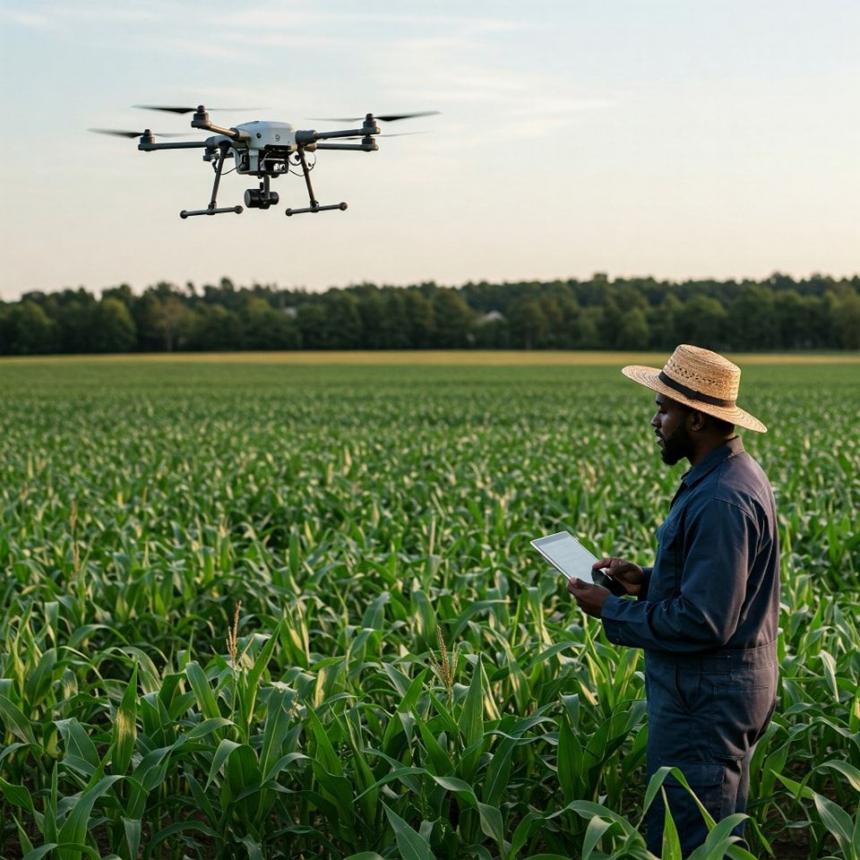
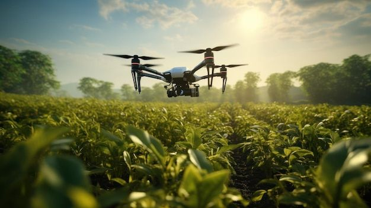

OS drones estão mudando a forma como a agricultura é praticada, oferecendo aos agricultores ferramentas poderosas para aumentar a eficiência, otimizar recursos e melhorar a produtividade de suas lavouras. Com a capacidade de coletar dados detalhados e de alta precisão, essas pequenas aeronaves se tornaram aliadas indispensáveis no campo.
Aplicação de Insumos de Forma Precisa O uso de drones para a aplicação de insumos (como fertilizantes e defensivos agrícolas) é uma das tecnologias mais promissoras. Ao invés de aplicar produtos em toda a lavoura, os drones conseguem pulverizar apenas as áreas que realmente precisam. Essa técnica, conhecida como agricultura de precisão, não só reduz a quantidade de produto utilizado, diminuindo custos e o impacto ambiental, mas também garante que as plantas recebam o tratamento necessário no momento certo.
Análise de Crescimento e Saúde das Plantas Os drones também são valiosos para o monitoramento do crescimento das plantas. Ao longo do ciclo de cultivo, voos regulares podem fornecer dados sobre a altura, o vigor e a densidade da vegetação. Essas informações são cruciais para estimar a produtividade, planejar a colheita e identificar áreas com crescimento deficiente, permitindo que o agricultor intervenha antes que os problemas se agravem.
Mapeamento e Monitoramento Aéreo Uma das principais aplicações dos drones é o mapeamento aéreo. Equipados com câmeras multiespectrais, eles conseguem capturar imagens que vão além do que o olho humano pode ver. Essas imagens revelam a saúde da vegetação, a presença de pragas e doenças, e até mesmo a necessidade de irrigação em áreas específicas. Com base nesses dados, o agricultor pode criar mapas de precisão que ajudam a identificar problemas e a tomar decisões estratégicas de forma mais rápida.
Otimização da Irrigação A irrigação é um dos maiores desafios na agricultura. Os drones equipados com sensores térmicos podem detectar variações de temperatura no solo, indicando áreas que estão mais secas ou com estresse hídrico. Com essa informação, o agricultor consegue otimizar a irrigação, aplicando água somente onde é necessário, economizando esse recurso natural tão valioso e garantindo a saúde das plantas. Em resumo, a integração dos drones na agricultura é um passo significativo em direção a uma produção mais sustentável, eficiente e inteligente, permitindo que os agricultores produzam mais com menos recursos.
    